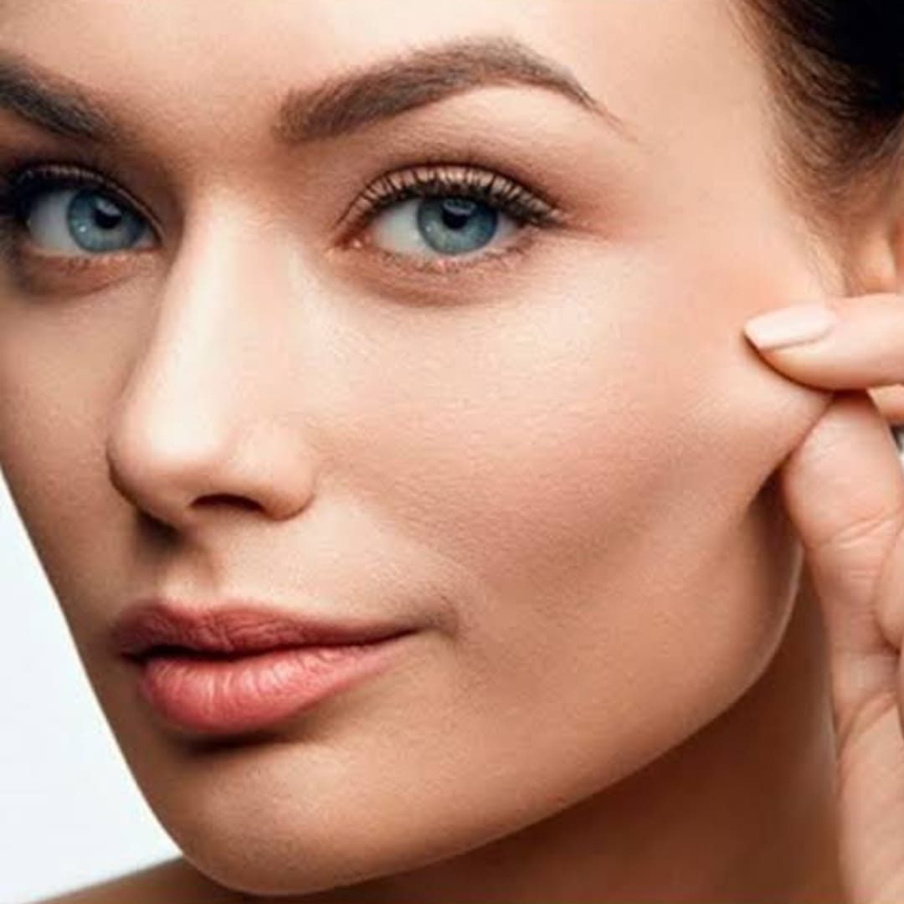
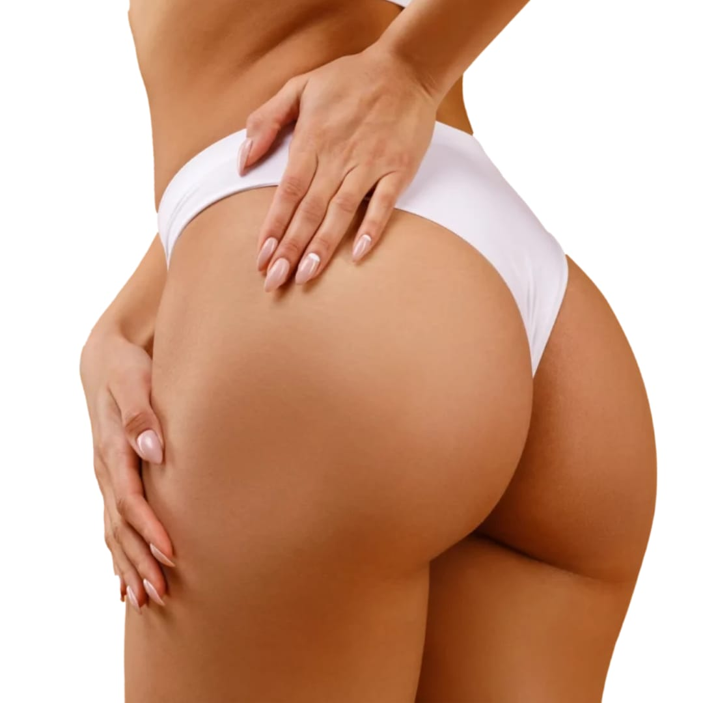

ÚLTIMOS PROCEDIMENTOS…
Toxina Botulínica (Botox): trata rugas dinâmicas e estáticas, principalmente de testa, glabela e orbicular dos olhos.
Botox

Bioestimulador de Colágeno: trata flacidez tissular, devolvendo espessura dérmica, lifting e iluminação.
Bioestimulador de Colágeno
Preenchimento Labial: volumisa, contorna e hidrata profundamente os lábios.
Preenchimento Labial

Harmonização de Glúteos: preenchimento com ácido hialurônico, para corrigir depressões, conferir volume e contorno para os glúteos.
Harmonização de Glúteos